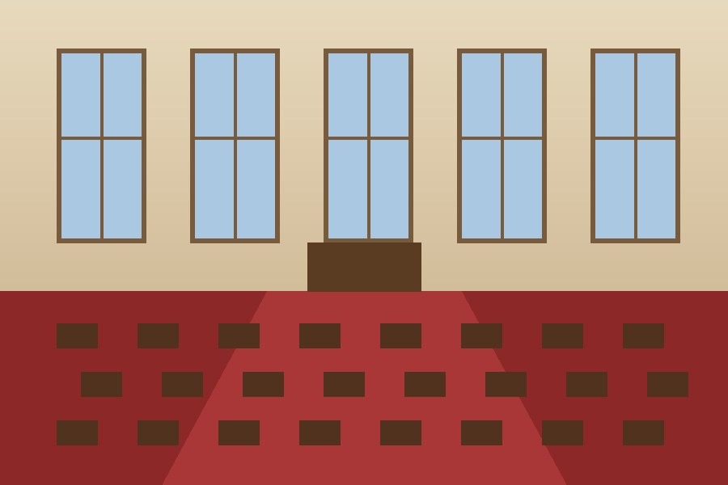

Évfordulók › 80. születésnap
80. születésnap
A 80. születésnapon Pécs város díszpolgári címmel köszöntötte. Az ünnepséget a városháza dísztermében tartották.

Évfordulók › 80. születésnap
A 80. születésnapon Pécs város díszpolgári címmel köszöntötte. Az ünnepséget a városháza dísztermében tartották.
